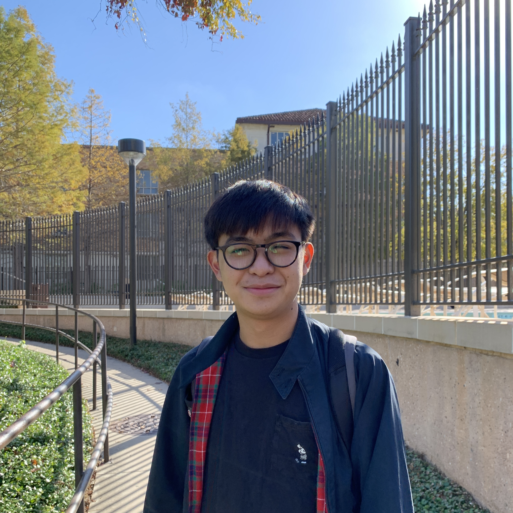

About
Hi! My name is Lance and I am currently a graduate Electrical and Computer Engineering student at UT Austin on the Architecture, Computer Systems, and Embedded Systems track. I grew up in the Rio Grande Valley, the southernmost part of Texas, and have always had a passion for creating things and solving problems.
Interests
I have a broad range of interests from embedded systems and computer architecture to AI/ML and blockchain technology. I am grateful to be able to explore these interestst through my experiences and organizations at school.